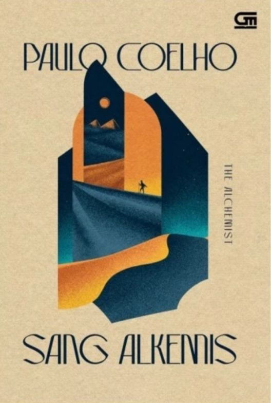
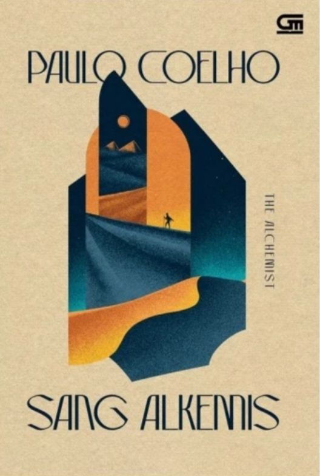

Perpustakaan
Digital
Novel
Laut Bercerita
Leila S. Chudori
Dompet Ayah Sepatu Ibu
J.S. Khairen
Seporsi Mie Ayam Sebelum Mati
Brian Khrisna
Bungkam Suara
J.S. Khairen
Hujan
Tere Liye

Sang Alkemis
Paulo Coelho
Pulang
Tere Liye
Sisi Tergelap Surga
Brian Khrisna
Namaku Alam
Leila S. Chudori
Babel: Pertumpahan Darah
R.F. Kuang

{kind=link}
{kind=link}
![Seporsi Mie Ayam Sebelum Mati Brian Khrisna](detail.html?judul=Seporsi%20Mie%20Ayam%20Sebelum%20Mati&img=img/seporsi_mie.jpg&penulis=Brian%20Khrisna
&ringkasan=Ale,%20seorang%20pria%20berusia%2037%20tahun%20memiliki%20tinggi%20badan%20189%20cm%20dan%20berat%20138%20kg.%20Badannya%20bongsor,%20berkulit%20hitam,%20dan%20memiliki%20masalah%20dengan%20bau%20badan.%20Sejak%20kecil,%20Ale%20hidup%20di%20lingkungan%20keluarga%20yang%20tidak%20mendukungnya.%20Ia%20tak%20memiliki%20teman%20dekat%20dan%20menjadi%20korban%20perundungan%20di%20sekolahnya.%0A%0A
Ale%20didiagnosis%20psikiaternya%20mengalami%20depresi%20akut.%20Bukannya%20Ale%20tidak%20peduli%20untuk%20memperbaiki%20dirinya%20sendiri,%20ia%20peduli.%20Ale%20telah%20berusaha%20mengatasi%20masalah-masalah%20yang%20timbul%20dari%20dirinya%20agar%20ia%20diterima%20di%20lingkungan%20pertemanan.%20Namun%20usahanya%20tidak%20pernah%20berhasil.%20Bahkan%20keluarganya%20pun%20tidak%20mendukungnya%20saat%20Ale%20membutuhkan%20sandaran%20dan%20dukungan.%0A%0A
Atas%20itu%20semua,%20Ale%20memutuskan%20untuk%20mati.%20Ia%20mempersiapkan%20kematiannya%20dengan%20baik.%20Agar%20ketika%20mati%20pun,%20Ale%20tidak%20banyak%20merepotkan%20orang.%20Dua%20puluh%20empat%20jam%20dari%20sekarang,%20ia%20akan%20menelan%20obat%20antidepresan%20yang%20dia%20punya%20sekaligus.%20Sebelum%20waktu%20itu%20tiba,%20Ale%20membersihkan%20apartemennya%20yang%20berantakan,%20makan%20makanan%20mahal%20yang%20tak%20pernah%20ia%20beli,%20pergi%20berkaraoke%20dan%20menyanyi%20sepuasnya%20hingga%20mabuk.%0A%0A
Saat%2024%20jam%20itu%20tiba,%20Ale%20telah%20bersiap%20dengan%20kemeja%20hitam%20dan%20celana%20hitam,%20bak%20baju%20melayat%20ke%20pemakamannya%20sendiri.%20Ia%20kenakan%20topi%20kecurut%20ulang%20tahun%20dan%20meletuskan%20konfeti%20yang%20ia%20beli%20untuk%20dirinya%20sendiri.%0A%0A
“Selamat%20ulang%20tahun%20yang%20terakhir,%20Ale.”%0A%0A
Ale%20siap%20menenggak%20seluruh%20obat%20antidepresan%20yang%20ia%20punya.%20Saat%20ia%20memain-mainkan%20botolnya,%20Ale%20terdiam%20saat%20membaca%20anjuran%20di%20kemasan%20botol%20itu,%20dikonsumsi%20sesudah%20makan.%20Seketika%20perutnya%20berbunyi.%20Dan%20Ale%20pun%20memutuskan%20untuk%20makan%20dulu%20sebelum%20mengakhiri%20hidupnya.%20Setidaknya,%20itu%20akan%20menjadi%20satu-satunya%20keputusan%20yang%20bisa%20dia%20ambil%20atas%20kehendaknya%20sendiri.%20Setelah%20selama%20hidupnya%20ia%20tak%20pernah%20mampu%20melakukan%20hal-hal%20yang%20ia%20inginkan.%0A%0A
Ale%20akan%20makan%20seporsi%20mie%20ayam%20sebelum%20mati.){kind=link}
%20merupakan%20negara%20yang%20tidak%20terdeteksi%20di%20peta%20dunia.%20Mereka%20menganggap%20dunia%20yang%20ada%20saat%20ini%20adalah%20Dunia%20Luar.%20NKAL%20berdiri%20pada%2023%20Januari%201991.%20Mulanya%20terdiri%20dari%20kerajaan-kerajaan%20kecil.%20Mereka%20Bersatu%20untuk%20membentuk%20sebuah%20negara%20atau%20kerajaan%20besar.%20NKAL%20adalah%20negara%20yang%20canggih%20di%20hal-hal%20tertentu,%20namun%20tertinggal%20di%20hal-hal%20lain.%0A%0A
Negara%20Kesatuan%20Adat%20Lemunesia%20(NKAL)%20merupakan%20negara%20yang%20tidak%20terdeteksi%20di%20peta%20dunia.%20Mereka%20menganggap%20dunia%20yang%20ada%20saat%20ini%20adalah%20Dunia%20Luar.%20NKAL%20berdiri%20pada%2023%20Januari%201991.%20Mulanya%20terdiri%20dari%20kerajaan-kerajaan%20kecil.%20Mereka%20Bersatu%20untuk%20membentuk%20sebuah%20negara%20atau%20kerajaan%20besar.%20NKAL%20adalah%20negara%20yang%20canggih%20di%20hal-hal%20tertentu,%20namun%20tertinggal%20di%20hal-hal%20lain.%0A%0A
Salah%20satu%20pemantik%20permasalahan%20dalam%20NKAL%20adalah%20adanya%20HARI%20BEBAS%20BICARA.%20HBB%20adalah%20satu%20hari%20di%20mana%20rakyat%20boleh%20berbicara%20secara%20bebas%20tanpa%20takut%20konsekuensi%20hukum.%20Namun%20HBB%20menjadi%20buah%20simalakam%20tatkala%20disalahgunakan%20untuk%20fitnah%20dan%20pecah%20belah%20negara.%20Dari%20sinilah%20kemudian%20lahir%20percikan-percikan%20ketegangan%20dari%20akar%20hingga%20ke%20ujung%20pemerintahan.){kind=link}
{kind=link}
![ Sang Alkemis Paulo Coelho](detail.html?judul=Sang%20Alkemis&img=img/sang_alkemis.jpg&penulis=Paulo%20Coelho
&ringkasan=Setiap%20beberapa%20puluh%20tahun,%20muncul%20sebuah%20buku%20yang%20mengubah%20hidup%20para%20pembacanya%20selamanya.%20Novel%20Paulo%20Coelho%20yang%20memikat%20ini%20telah%20memberikan%20inspirasi%20bagi%20jutaan%20orang%20di%20seluruh%20dunia.%20Kisah%20yang%20sangat%20sederhana,%20namun%20menyimpan%20kebijaksanaan%20penuh%20makna,%20tentang%20anak%20gembala%20bernama%20Santiago%20yang%20berkelana%20dari%20rumahnya%20di%20Spanyol%20ke%20padang%20pasir%20Mesir%20untuk%20mencari%20harta%20karun%20terpendam%20di%20Piramida-Piramida.%20Di%20perjalanan%20dia%20bertemu%20seorang%20perempuan%20Gipsi,%20seorang%20lelaki%20yang%20mengaku%20dirinya%20Raja,%20dan%20seorang%20alkemis––semuanya%20menunjukkan%20jalan%20kepada%20Santiago%20untuk%20menuju%20harta%20karunnya.%20Tak%20ada%20yang%20tahu%20isi%20harta%20karun%20itu,%20atau%20apakah%20Santiago%20akan%20berhasil%20mengatasi%20rintangan-rintangan%20sepanjang%20jalan.%20Namun%20perjalanan%20yang%20semula%20bertujuan%20untuk%20menemukan%20harta%20duniawi%20berubah%20menjadi%20penemuan%20harta%20di%20dalam%20diri.%20Kaya,%20menggugah,%20dan%20sangat%20manusiawi,%20kisah%20Santiago%20menunjukkan%20kekuatan%20mimpi-mimpi%20dan%20pentingnya%20mendengarkan%20suara%20hati%20kita.){kind=link}
![Sisi Tergelap Surga Brian Khrisna](detail.html?judul=Sisi%20Tergelap%20Surga&img=img/sisi_tergelap_surga.jpg&penulis=Brian%20Khrisna
&ringkasan=Selayaknya%20seorang%20ibu%20tua%20yang%20kelelahan,%20kota%20Jakarta%20kerap%20menjadi%20pelabuhan%20bagi%20mereka%20yang%20datang%20membawa%20sekoper%20harapan.%20Mereka%20yang%20siap%20bertaruh%20dengan%20nasibnya%20sendiri-sendiri.%20Namun,%20kota%20ini%20selalu%20mampu%20melumat%20habis%20harapan%20dan%20menukarnya%20dengan%20keputusasaan.%0A%0A
Pemulung,%20pengamen,%20pramuria%20yang%20menjajakan%20tubuh%20agar%20anaknya%20bisa%20makan,%20pemimpin-pemimpin%20kecil%20yang%20culas,%20lelaki%20tua%20di%20balik%20kostum%20badut%20ayam,%20pencuri%20motor%20yang%20ingin%20membeli%20obat%20untuk%20ibunya,%20remaja%20yang%20melumuri%20tubuh%20dengan%20cat%20perak,%20hingga%20mereka%20yang%20bergelut%20di%20terminal%20setelah%20terpaksa%20merelakan%20impiannya%20habis%20digerus%20kejinya%20ibu%20kota.%20Di%20Jakarta,%20semua%20orang%20dipaksa%20bergelut%20dan%20bertempur%20demi%20bisa%20hidup%20dari%20hari%20ke%20hari.%20Dan%20di%20kampung%20inilah%20semua%20itu%20dimulai.%20Sebuah%20cerita%20tentang%20kehidupan%20orang-orang%20yang%20hidup%20di%20sisi%20tergelap%20surga%20kota%20bernama%20Jakarta...){kind=link}
![Namaku Alam Leila S. Chudori](detail.html?judul=Namaku%20Alam&img=img/namaku_alam.jpg&penulis=Leila%20S.%20Chudori
&ringkasan=Inilah%20yang%20kubayangkan%20detik-detik%20terakhir%20Bapak:%0A%0A
18%20Mei%201970.%0A%0A
Hari%20gelap.%20Langit%20berwarna%20hitam%20dengan%20garis%20ungu.%20Bulan%20bersembunyi%20di%20balik%20ranting%20pohon%20randu.%20Sekumpulan%20burung%20nasar%20bertengger%20di%20pagar%20kawat.%20Mereka%20mencium%20aroma%20manusia%20yang%20nyaris%20jadi%20mayat%20bercampur%20bau%20mesiu.%20Terdengar%20lolongan%20anjing%20berkepanjangan.%20Empat%20orang%20berbaris%20rapi,%20masing-masing%20berdiri%20dengan%20senapan%20yang%20diarahkan%20kepada%20Bapak.%20Hanya%20satu%20senapan%20berisi%20peluru%20mematikan.%20Selebihnya,%20peluru%20karet.%20Tak%20satu%20pun%20di%20antara%20keempat%20lelaki%20itu%20tahu%20siapa%20yang%20kelak%20menghentikan%20hidup%20Bapak.%0A%0A
***%0A%0A
Pada%20usianya%20yang%20ke-33%20tahun,%20Segara%20Alam%20menjenguk%20kembali%20masa%20kecilnya%20hingga%20dewasa.%20Semua%20peristiwa%20tertanam%20dengan%20kuat.%20Karena%20memiliki%20photographic%20memory,%20Alam%20ingat%20pertama%20kali%20dia%20ditodong%20senapan%20oleh%20seorang%20lelaki%20dewasa%20ketika%20masih%20berusia%20tiga%20tahun;%20pertama%20kali%20sepupunya%20mencercanya%20sebagai%20anak%20‘pengkhianat%20negara’;%20pertama%20kali%20Alam%20berkelahi%20dengan%20seorang%20anak%20pengusaha%20besar%20yang%20menguasai%20sekolah;%20dan%20pertama%20kali%20dia%20jatuh%20cinta.){kind=link}
![Babel: Pertumpahan Darah R.F. Kuang](detail.html?judul=Babel:%20Pertumpahan%20Darah&img=img/babel.jpg&penulis=R.F.%20Kuang
&ringkasan=1828.%20Robin%20Swift%20menjadi%20yatim%20piatu%20akibat%20kolera%20di%20Kanton,%20lalu%20dibawa%20ke%20London%20oleh%20Profesor%20Lovell%20yang%20misterius.%20Robin%20mendapat%20pelatihan%20selama%20bertahun-tahun%20dalam%20bahasa%20Latin,%20Yunani%20Kuno,%20dan%20Tionghoa%20sebagai%20bentuk%20persiapan%20untuk%20hari%20ketika%20dia%20akan%20masuk%20ke%20Institut%20penerjemahan%20bergengsi%20di%20Universitas%20Oxford—atau%20yang%20dikenal%20sebagai%20Babel.%0A%0A
Babel%20adalah%20pusat%20penerjemahan%20dunia%20dan,%20yang%20lebih%20penting%20lagi,%20adanya%20cipta-perak:%20seni%20mewujudkan%20makna%20yang%20hilang%20dalam%20penerjemahan%20melalui%20batangan%20perak%20yang%20dipahat,%20dengan%20efek%20magis.%20Pengerjaan%20perak%20telah%20membuat%20Imperium%20Inggris%20memiliki%20kekuatan%20yang%20tak%20tertandingi.%20Penelitian%20Babel%20tentang%20penerjemahan%20membantu%20upaya%20Imperium%20untuk%20menjajah%20segala%20sesuatu%20yang%20ditemuinya.%0A%0A
Oxford,%20kota%20dengan%20menara-menara%20impian,%20adalah%20sebuah%20dongeng%20bagi%20Robin:%20sebuah%20komunitas%20utopia%20yang%20didedikasikan%20untuk%20mengejar%20pengetahuan.%20Namun,%20pengetahuan%20melayani%20kekuasaan,%20dan%20bagi%20Robin—seorang%20anak%20Tiongkok%20yang%20dibesarkan%20di%20Britania—mengabdi%20pada%20Babel%20berarti%20mengkhianati%20tanah%20leluhurnya.%0A%0A
Robin%20mendapati%20dirinya%20terjebak%20di%20antara%20Babel%20dan%20Perkumpulan%20Hermes,%20sebuah%20organisasi%20yang%20didedikasikan%20untuk%20menyabotase%20pekerjaan%20perak%20yang%20mendukung%20ekspansi%20Imperium.%20Ketika%20Britania%20mengejar%20perang%20yang%20tidak%20adil%20dengan%20Tiongkok%20untuk%20mendapatkan%20perak,%20dia%20harus%20memutuskan:%20Dapatkah%20institusi%20yang%20berkuasa%20diubah%20dari%20dalam,%20atau%20apakah%20revolusi%20selalu%20membutuhkan%20kekerasan?){kind=link}